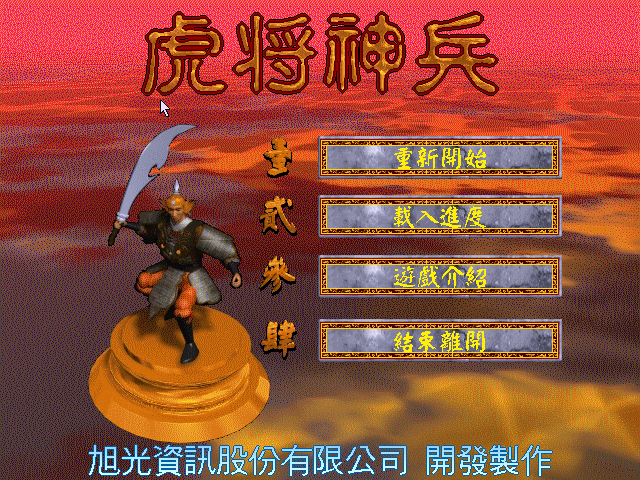
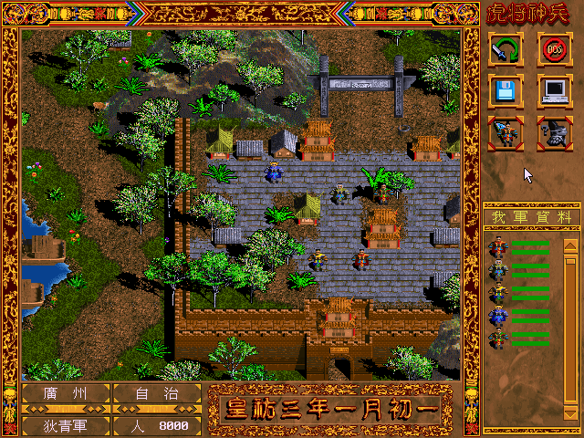
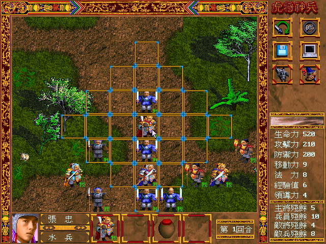

名稱：虎將神兵：平亂大事記 (中文版) 簡介：旭光1997年出品的策略角色扮演遊戲，兼具戰略遊戲的元素 [待補]。


保護：光碟，破解碼： TIGER.EXE E8 8D 90 02 00 83 C4 04 88 C3 3C 43 73 28 B4 19 CD 21 90 -- -- -- 04 41 88 C3 EB -- 75 09 53 E8 49 02 00 00 -- -- -- 90 90 90 90 90 C3 68 84 0F 00 00 -- C3 -- -- -- -- 63 3A 5C 54 47 46 49 4C 45 2E 43 44 4C 00 -- -- 54 47 46 49 4C 45 2E 43 44 4C 00 -- 備註：電腦速度不可太快，否則不好操控。 操作：遊戲不支援鍵盤，均以滑鼠操控。